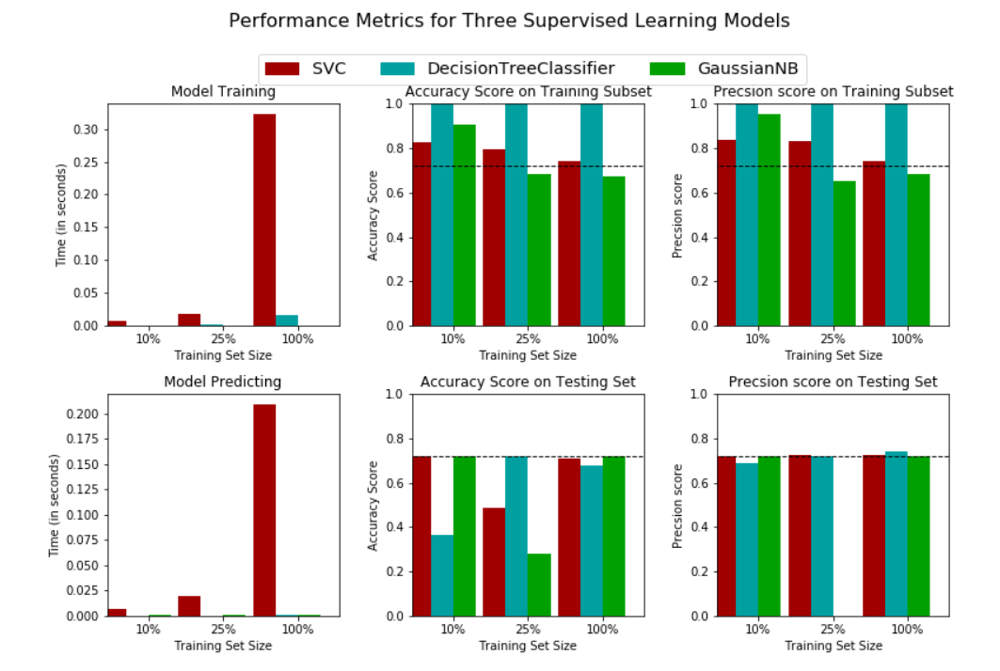
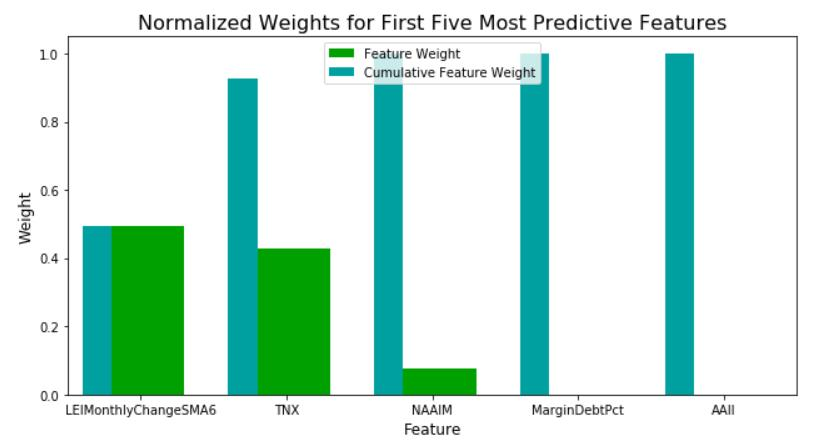

In 2008, Warran Buffett issued a challenge to the hedge fund industry, the fee will not justify the performance, over a period of ten years. His won the bet in 2015 when Ted Seides conceded the defeat early. In the past decade, passive investment strategy popularized by use of ETF, has been gaining market share at expense of not just Hedge fund industry, once a darling in investment world, but also active managed investment in general. Passive investment formally surpassed active management in September 2019.
Some of the classic strategy of hedge funds is to use macro-economy data to predict future movement of stock price. Today, not just macro- economy could be readily accessible, some data of the frequently used strategies, such as Treasury price and yield, market sentiment as such investor sentiment survey, are publically accessible and available. By using data science and machine learning techniques, we could
1. Back test the performance of those strategies.
2. Proof or disapprove if these strategies have potential to beat passive investment.
3. Analysis of factors used in the strategy.
4. Analysis of machine learning techniques and their bias.
We elected three major categories of data and choose a representative one in each category, to determine the predictive power of the data to future stock price movement. There are infinite ways to model the problem. In order to be able to fit into machine learning techniques, with many of them are classifiers, we choose to use the level of current data, to predict the price movement direction of future stock price, at a specific period in the future, either going up, or going down. This model allow to provide binary classification and give us large amount of data, as each day of data can be a data point.
Three categories are chosen:
1. Macro-economy data: Conference Board Leading Economy Indicator, which is published monthly, is chosen representative in this category.
2. Alternative investment, e.g., bond or Treasury: 10 Year Treasury Internet Rate, which is considered the benchmark of all asset pricing and is considered a safe alternative to stock investment, is chosen in this category. This data is published daily.
3. Sentiment survey: Association of Individual Investors Sentiments, which publish weekly is one of the oldest measure of investor sentiment.
We choose three machine learning classifiers: SVM, Decision Tree, and Naïve Bayes, and use accuracy and precision scores to measure their performance. For benchmark, passive investment strategy is used. It essentially predicts every day is a good day to buy and never sell.
We also separate data set into past and future, and optimize the model based on past data, and predict into future. It is important in the time series data that we cannot use future to predict the past, as it violates the logic in the real world.

Our findings indicate:
1. SVM perform the best, Decision Tree give just as good result as SVM. Naive Bayes can be a bit unpredictable and have wider score variations.
2. SVM, and Decision Tree comes close, but not able to, beat the passive strategy. The score of passive strategy is indicated by dash lines in above graph.
3. Since Decision Tree is a good enough model, we take advantage of it being able to provide the feature weight analysis, and look at the contribution to the weights from the three categories. Leading Economic Indicator has majority of the weight, with Treasury Interest Rate not far behind. Sentiment data contribute to some but far less weight in this analysis.
4. Decision Tree is interesting in that it has huge difference between the score of training data and testing data. Overfitting occur very often for this model.

We demo a simple analysis using machine learning techniques to analyze investment strategy. In the way we choose to model the problem, and the machine learning techniques for analysis, it comes to a conclusion that appear to match what happen in the real world, e.g., all strategies are not able to beat a simple passive, buy and hold investment strategy. However, this is by no mean conclusion, as different way of modeling the data, and choose different period of time in the history, could potentially give widely varying results. The analysis does give as objective way to measure the performance of investment strategies, in a world where the choice of strategies are often subjective.